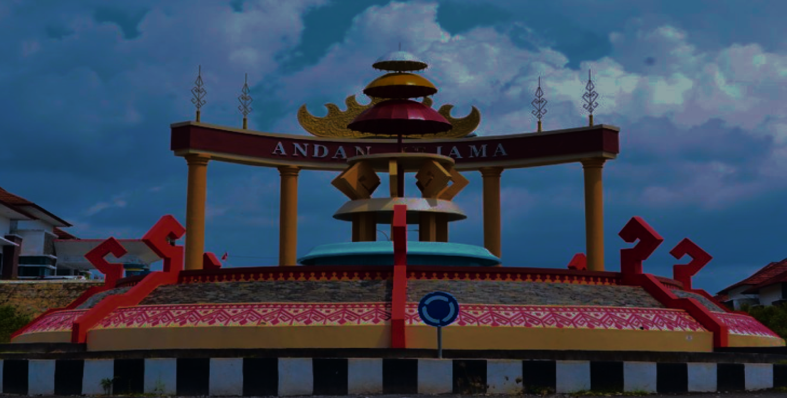

Kerjasama Internasional untuk Energi Terbarukan
Indonesia mendapat dukungan dari berbagai negara dalam upayanya mengembangkan energi terbarukan.
Jumat, Juni 2024Inovasi Terbaru dalam Teknologi Pengolahan Air Bersih
Teknologi terbaru membantu mengatasi krisis air bersih dengan efisiensi yang lebih baik.
Kamis, Juli 2024Penemuan Spesies Baru di Taman Nasional Gunung Leuser
Penemuan spesies baru menunjukkan kekayaan biodiversitas di Taman Nasional Gunung Leuser.
Senin, Agustus 2024Peningkatan Infrastruktur Jalan di Daerah Terpencil
Pembangunan infrastruktur jalan baru akan meningkatkan aksesibilitas dan ekonomi di daerah terpencil.
Selasa, September 2024